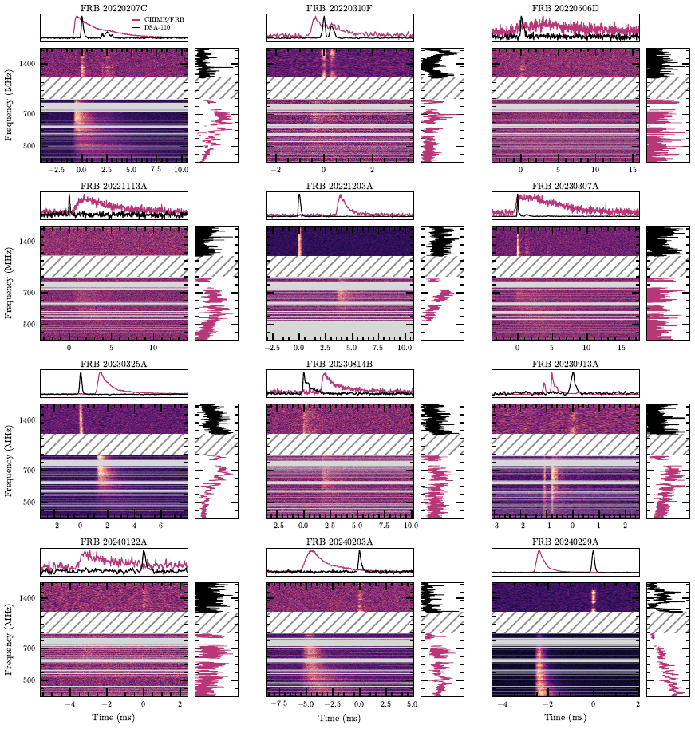

{kind=link}
fig1-gallery: Figure 1: observed-peak CHIME/FRB and DSA-110 gallery candidate
Status: pending

- Manuscript target
figures/codetection_data_grid.pdf- Candidate SHA-256
979e616b2d82c395080fa32c5f5554b64568849683c0129eb4b01f55eb63915a- Generator
scripts/plot_codetection_data_grid.py- Required provenance
- adopted DM and uncertainty for every burst; input waterfall path and SHA-256 for both telescopes; input-product DM and applied re-dedispersion offset; time/frequency resolution and mask summary; raw-header band edges and channel ordering for both telescopes; per-panel residual frequency-time drift estimate and zero-consistency status
- Frozen evidence
- dm-catalog, joint-render-manifest, frequency-axis-and-inputs, residual-drift
- DM record
[ { "adopted_dm": "262.361665", "adopted_sigma": "0.010372", "adoption": "chime_primary", "between_band_sigma": "0.023274", "chime_dm": "262.361665", "chime_minus_dsa": "0.045268", "chime_sigma": "0.010372", "dsa_dm": "262.316397", "dsa_sigma": "0.029297", "gaussian_joint_dm": "262.347322", "gaussian_joint_sigma": "0.021060", "nick": "zach", "tns": "FRB 20220207C" }, { "adopted_dm": "462.188773", "adopted_sigma": "0.005000", "adoption": "chime_primary", "between_band_sigma": "0.000000", "chime_dm": "462.188773", "chime_minus_dsa": "-0.004032", "chime_sigma": "0.005000", "dsa_dm": "462.192806", "dsa_sigma": "0.029313", "gaussian_joint_dm": "462.188887", "gaussian_joint_sigma": "0.004929", "nick": "whitney", "tns": "FRB 20220310F" }, { "adopted_dm": "397.015535", "adopted_sigma": "0.005000", "adoption": "chime_primary", "between_band_sigma": "0.000000", "chime_dm": "397.015535", "chime_minus_dsa": "0.074489", "chime_sigma": "0.005000", "dsa_dm": "396.941046", "dsa_sigma": "0.082506", "gaussian_joint_dm": "397.015263", "gaussian_joint_sigma": "0.004991", "nick": "oran", "tns": "FRB 20220506D" }, { "adopted_dm": "411.435717", "adopted_sigma": "0.005000", "adoption": "chime_primary", "between_band_sigma": "0.064884", "chime_dm": "411.435717", "chime_minus_dsa": "-0.116990", "chime_sigma": "0.005000", "dsa_dm": "411.552707", "dsa_sigma": "0.072400", "gaussian_joint_dm": "411.471916", "gaussian_joint_sigma": "0.054079", "nick": "isha", "tns": "FRB 20221113A" }, { "adopted_dm": "602.377821", "adopted_sigma": "0.006047", "adoption": "chime_primary", "between_band_sigma": "0.000000", "chime_dm": "602.377821", "chime_minus_dsa": "-0.001370", "chime_sigma": "0.006047", "dsa_dm": "602.379192", "dsa_sigma": "0.012800", "gaussian_joint_dm": "602.378071", "gaussian_joint_sigma": "0.005467", "nick": "wilhelm", "tns": "FRB 20221203A" }, { "adopted_dm": "610.289070", "adopted_sigma": "0.005000", "adoption": "chime_primary", "between_band_sigma": "0.039496", "chime_dm": "610.289070", "chime_minus_dsa": "0.056527", "chime_sigma": "0.005000", "dsa_dm": "610.232543", "dsa_sigma": "0.007096", "gaussian_joint_dm": "610.261030", "gaussian_joint_sigma": "0.028262", "nick": "phineas", "tns": "FRB 20230307A" }, { "adopted_dm": "912.407552", "adopted_sigma": "0.015668", "adoption": "chime_primary", "between_band_sigma": "0.055841", "chime_dm": "912.407552", "chime_minus_dsa": "-0.083539", "chime_sigma": "0.015668", "dsa_dm": "912.491091", "dsa_sigma": "0.022292", "gaussian_joint_dm": "912.447817", "gaussian_joint_sigma": "0.041742", "nick": "freya", "tns": "FRB 20230325A" }, { "adopted_dm": "696.518001", "adopted_sigma": "0.005000", "adoption": "chime_primary", "between_band_sigma": "0.000000", "chime_dm": "696.518001", "chime_minus_dsa": "0.052497", "chime_sigma": "0.005000", "dsa_dm": "696.465504", "dsa_sigma": "0.068454", "gaussian_joint_dm": "696.517722", "gaussian_joint_sigma": "0.004987", "nick": "johndoeII", "tns": "FRB 20230814B" }, { "adopted_dm": "518.796993", "adopted_sigma": "0.005000", "adoption": "chime_primary", "between_band_sigma": "0.000000", "chime_dm": "518.796993", "chime_minus_dsa": "-0.000663", "chime_sigma": "0.005000", "dsa_dm": "518.797655", "dsa_sigma": "0.063024", "gaussian_joint_dm": "518.796997", "gaussian_joint_sigma": "0.004984", "nick": "hamilton", "tns": "FRB 20230913A" }, { "adopted_dm": "960.131611", "adopted_sigma": "0.005000", "adoption": "chime_primary", "between_band_sigma": "0.000000", "chime_dm": "960.131611", "chime_minus_dsa": "0.045776", "chime_sigma": "0.005000", "dsa_dm": "960.085835", "dsa_sigma": "0.069745", "gaussian_joint_dm": "960.131377", "gaussian_joint_sigma": "0.004987", "nick": "mahi", "tns": "FRB 20240122A" }, { "adopted_dm": "272.638699", "adopted_sigma": "0.011918", "adoption": "chime_primary", "between_band_sigma": "0.000000", "chime_dm": "272.638699", "chime_minus_dsa": "0.077283", "chime_sigma": "0.011918", "dsa_dm": "272.561416", "dsa_sigma": "0.086174", "gaussian_joint_dm": "272.637248", "gaussian_joint_sigma": "0.011806", "nick": "chromatica", "tns": "FRB 20240203A" }, { "adopted_dm": "491.207826", "adopted_sigma": "0.005165", "adoption": "chime_primary", "between_band_sigma": "0.000000", "chime_dm": "491.207826", "chime_minus_dsa": "0.010334", "chime_sigma": "0.005165", "dsa_dm": "491.197492", "dsa_sigma": "0.039550", "gaussian_joint_dm": "491.207653", "gaussian_joint_sigma": "0.005122", "nick": "casey", "tns": "FRB 20240229A" } ]- Reviewer notes
- Unreviewed observed-peak candidate. Science validation remains blocked because the requested per-panel residual-drift zero-consistency gate is not met; exact-byte owner approval is still required.